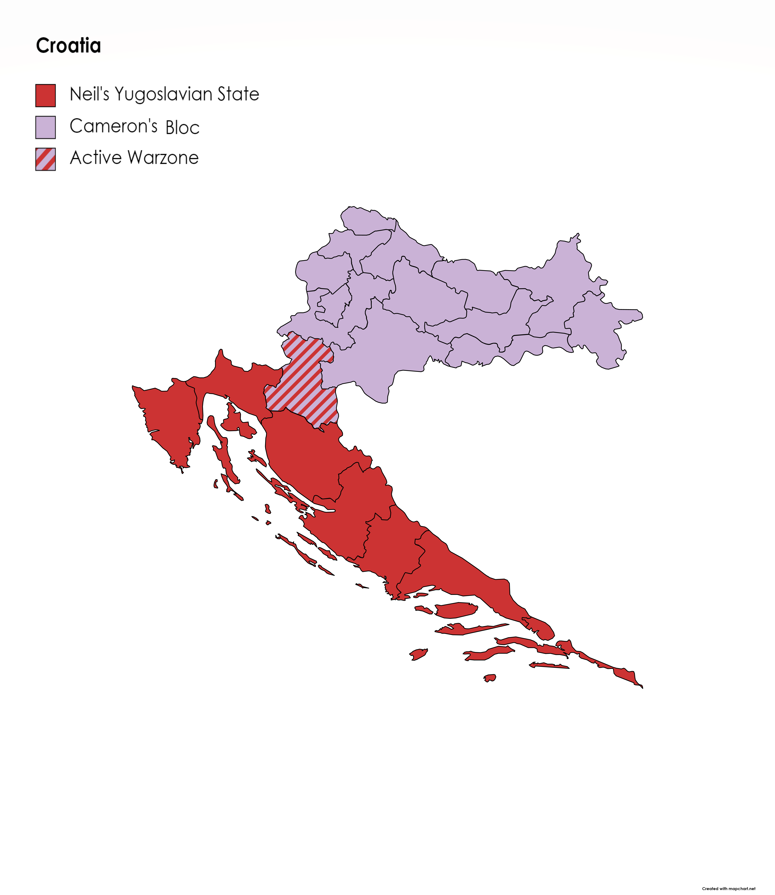
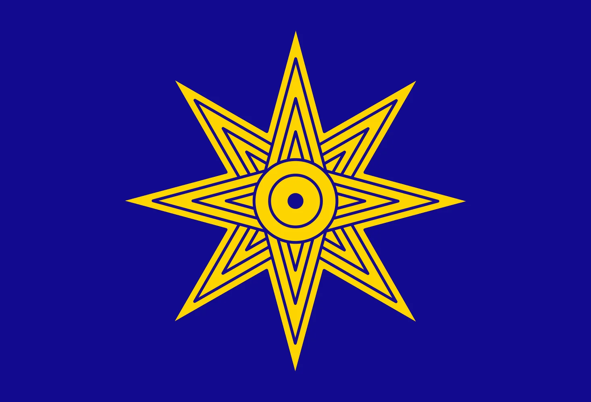
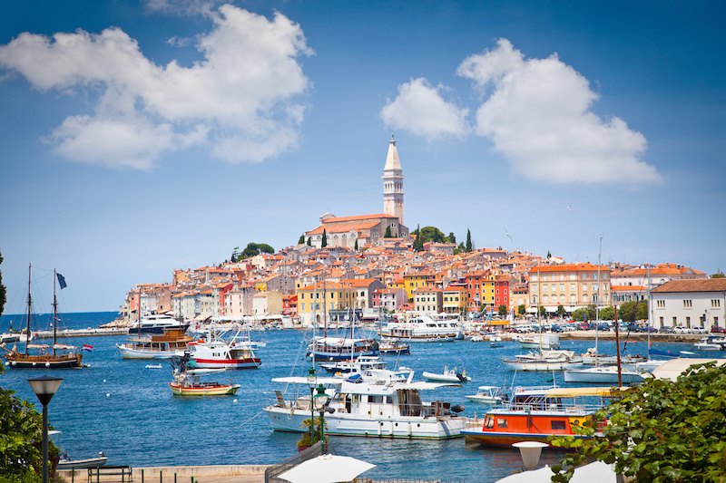
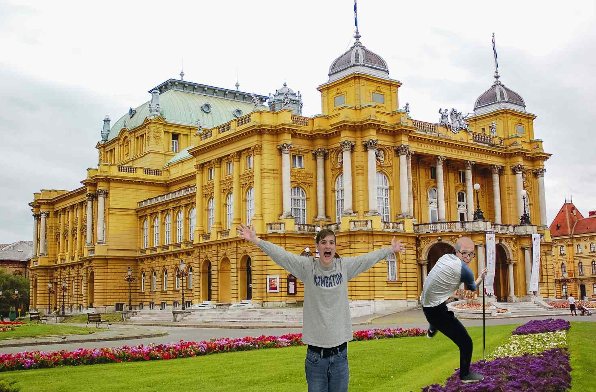

| Croatian War | |
|---|---|
|

Map of Croatia during the height of the war.
|
|
| Date | 10 May 2025-15 August 2025 (3 months, 5 days) |
| Location | Croatia, Slovenia, and surrounding regions |
| Result | Cameron's victory |
| Territorial changes |
|
| Belligerents | |

Yugoslavia
Belligerent

Cameron's Defense Bloc
Belligerent
|
|
| Commanders and leaders | |
|
Neil Divins
Yugoslavia

The Moon
Luna
Cameron Impostor
Cameron's Defense Bloc
Ringo Starr
Cameron's Defense Bloc
 Old Man Smeff
Mesopotamia
|
|
| Strength | |
|
Yugoslavia
1,000,000 troops
500,000 secret police
Luna
100,000 moon men
CDB
850,000 troops
300,000 civilian volunteers
10,000 Reese's Employees
1 deity
SMEFF
100,000 troops
|
|
| Casualties and losses | |
|
Over 300,000 dead
400,000 wounded
100,000 captured
10,000 dead
100,000 wounded
150 captured
|
|
The Croatian War was an armed conflict that took place in the former Yugoslavia in 2025. Following Neil's Secret Invasion of Yugoslavia in 2021, Neil Divins set his sights on fully reunifying the former Yugoslavia under his rule. Earlier attempts at secretly invading Croatia and Slovenia failed, leading Neil's army to march directly on Croatia. The main belligerents were Neil's Yugoslavia and Cameron's Defense Bloc, headed by Cameron Impostor. Yugoslavia received heavy support from the moon, with the CDB recieving backup from Mesopotamia and local Croatian and Slovene conscripts.
The conflict ended Neil's ambitions of fully reunifying Yugoslavia, with his sights set on expanding further into Asia. Cameron and Old Man Smeff personally executed the temporary governors put in place in formerly occupied parts of Croatia, ensuring no lineage could be created. The end of the war led to the ongoing information campaign by SusiPedia against Yugoslavia and Neil Divins. The aftermath also allowed for Cameron to form a union of states dedicated to restoring democracy to Eastern Europe, known as Cameron's Free States.
Following Neil Divin's Secret Invasion of Yugoslavia, he was met with a stalemate at the Croatian border. Neil turned to conquer territories in West Asia as a way to garner loyalty to further invade Europe. Cameron Impostor felt uneasy about Neil's conquering of areas such as Turkiye, and stationed some of his soldiers on the Croatian border at the request of the EU. This caused a substantial unrest in Yugoslavia, with citizens in Bosnia especially feeling unease over the close presence of foreign soldiers. Neil is said to have met with his cabinet on May 1, 2025 to discuss the situation. Little is known of what was said during the meeting, though rumors of the moon's presence have substantial evidence.
There were two factions in the Croatian War:
The Yugoslavian military and secret police united on the Croatian front, acting as one military command chain. The government of Yugoslavia drew resources from its vast territory to supply its troops, with the country's supply routes running through hostile Bulgarian airspace. Neil Divins, the commander of the Yugoslav military, headed all operations from Belgrade.
The moon heavily aided the Yugoslav army, sending 100,000 moon men during the onset of the conflict. The moon acted directly on the front lines, with its substantial gravity and mass making it difficult to harm in any meaningful way. The moon men armed the Yugoslav army with ray guns, flying saucers, and lasers.

Cameron's Defense Bloc was placed on the Croatian-Bosnian border prior to the conflict. Conscripted by the EU, the group was headed by Cameron Impostor and consisted of a mix of soldiers from Eastern Europe and volunteers from Croatia and Slovenia. The group was aided by about 10,000 Reese's employees who held down local foods factories, preventing their destruction, and distributed Reese's Puffs among the masses. The combined military force was seen as nearly invincible due to their direct endorsement from God.
The group was backed financially by the EU and leftist political figures such as Chip and Blåhaj. Though Yugoslavia is considered a left-wing dictatorship, the leftist bloc of Europe considered them their biggest threat, as they posed a corruption risk to other leftist parties. Though the conflict did not escalate to this end, the EU was prepared to deploy its own troops should Zagreb be held by Neil.
Old Man Smeff Mancala directly aided the CDB in the war effort. Sending over 100,000 soldiers to the CDB and joining the front line himself, he became a known hero of the conflict. Smeff mostly provided ground support, though he was able to arm the CDB with the Mancala beads that proved crucial when ammo became short.
On May 9, 2025, Neil Divins sent a warning shot on the Croatian border. Cameron was called in to assess the damage, where he declared preparation for war to be immediately necessary. On May 10, 2025, Neil set off a bomb in a military base outside of Split, killing every soldier inside and injuring nearby civilians. Cameron immediately declared war.

Neil invaded the entire coast of Croatia with incredible speed, taking all of Dalmatia and Istria and parts of Central Croatia within only a few days. Cameron's army was overwhelmed, with soldiers being told to retreat to Karlovac to prepare for an offensive. All of the Croatian coast was abandoned, with civilians told to stay inside and ration food and water. Yugoslavia declared and early victory on 20 May, 2025.
Neil's forces entered Karlovac on 25 May, after Yugoslav forces secured the Croatian coast. The Yugoslav army entered expecting an easy victory, but was met with over 100,000 CDB soldiers directly on the border. The surprise attack led to a massacre of Neil's forces, with the moon sending in reinforcements attempting to turn the tide of the conflict. The battle ended in complete CDB victory, with fewer than 100 CDB soldiers killed to the 100,000 Yugoslav and 50,000 Lunar forces killed. Those present say the aftermath left a literal lake of blood in its wake.

On 20 June, 1 month after Neil Divins declared victory over Croatia, the CDB and SMEFF launched a campaign to take back Istria and the remaining occupied areas of Central Croatia. The siege lasted a little over a month, with the CDB having few losses throughout the entire battle. All occupied provinces in northern Croatia were reclaimed, with CDB forces reaching a standstill on the border with occupied Dalmatia. All lunar forces retreated following the turn of the battle.
On August 10, 10,000 further soldiers from Mesopotamia successfully landed on the Croatian coast, launching a surprise attack on the Yugoslav forces. Over the course of five days, the CDB and SMEFF successfully reclaimed Dalmatia and pushed all enemy forces back into Yugoslavia. With the CDB ready to launch an assault on Bosnia, Neil Divins quickly negotiated a peace treaty and surrendered unconditionally on August 15, 2025.

Cameron Impostor announced his victory in Zagreb on August 15, 2025. Yugoslavia was prevented from any further expansion, and heavy sanctions were placed upon it. In retaliation, Neil Divins expelled all SusiPedia employees, the only education workers active in Yugoslavia, to Croatia. Yugoslavia also consolidated its Asian territories into its main government to threaten its Asian front further.
Much of Eastern Europe was annexed by the CDB, forming a federal republic with other territories part of the CDB operating in conjunction with the EU to preserve democracy, known as Cameron's Free States. The CFS incorporated all countries directly threatened by Russia and Yugoslavia into its territory as an attempt to create a large EU state in hopes of intimidating foreign adversaries. The federation intends to dissolve back into its member states following the toppling of the Neil regime.
{kind=link}